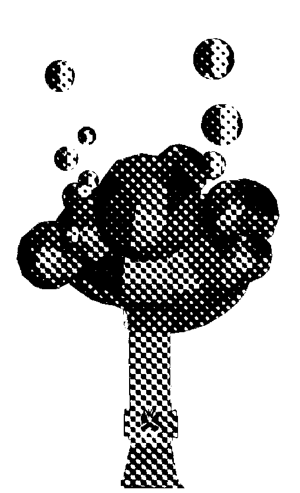
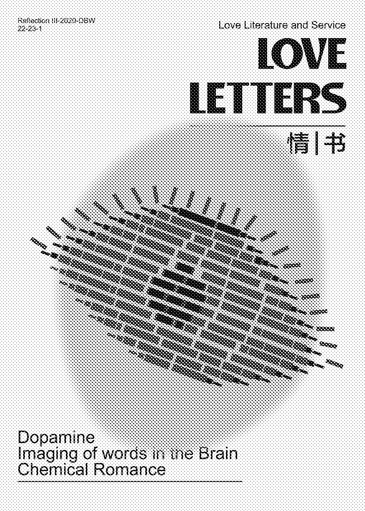
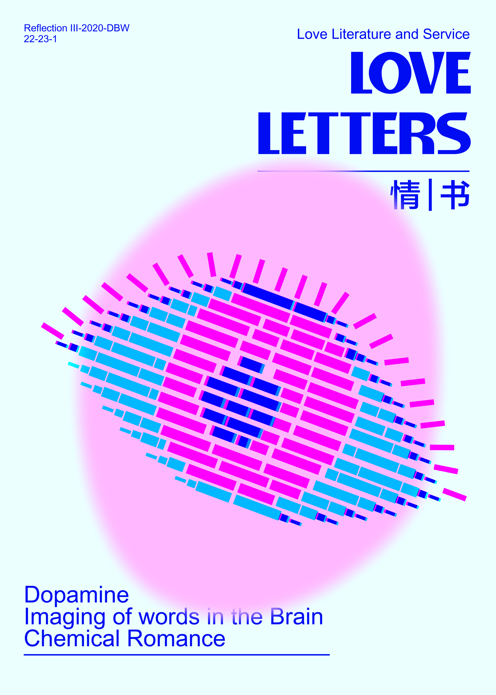
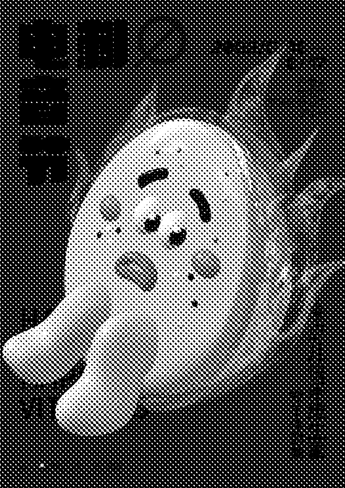
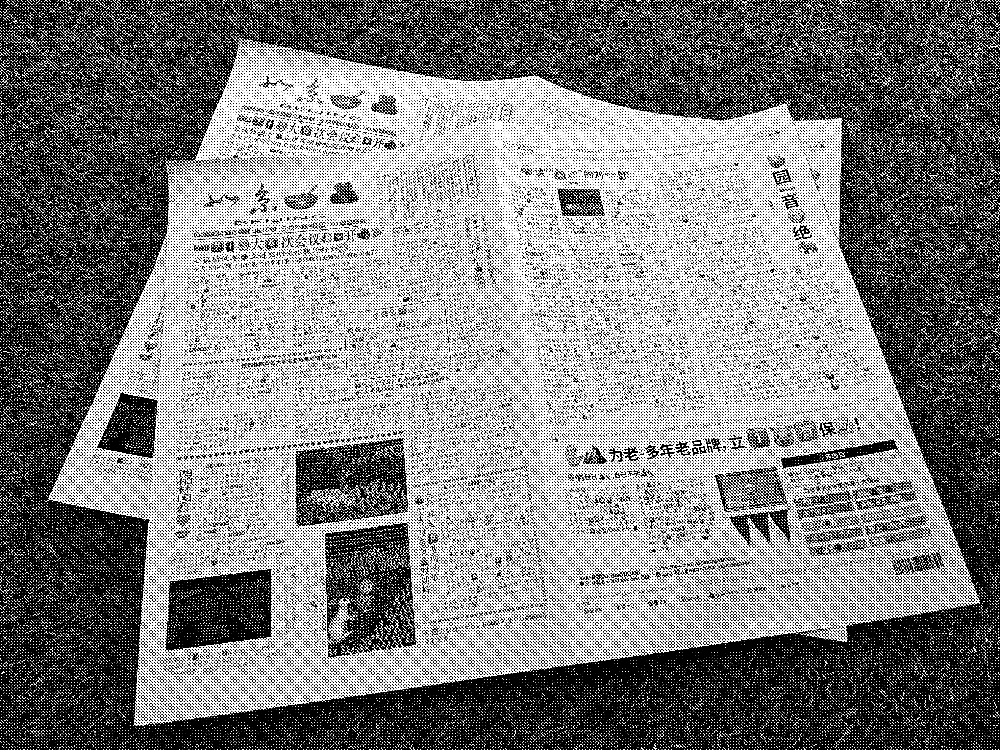

The Unorthodox Designer Times
Info
LEngaged in the design industry for 21 years, specializing in various university assignments.
NO.0001
Click on each project to see the project details
Please read on!
全自动驿站
Fully Automatic Station
2022/ 3-2022/ 6

Fully automatic post station is a post station based on logistics problems in modern society. With the rapid increase in logistics demand, there are problems between the post station and consumers, such as signing for express delivery, and the protection of express parcels. The rolep of fully automatic post station It is to omit the distance between the post station and the consumer, and deliver the courier directly to the door of the consumer.
情书
Love Letters
2022/ 9-2022/ 12


This project explores the service of love novels to people. This service is both spiritual and material. When people read love texts, they have a firework show inside their brains. The touching plot and lingering emotions in romance novels will stimulate your cerebral cortex to secrete substances called dopamine, serotonin and oxytocin. When these three responses combine, it creates an intense cocktail of empathy, emotion, action, and joy, which is why you'll want to stay up all night reading a romance novel.
无刺电音节
No Thron
2022/ 10-2023/ 3

This project starts from thinking about how people can reproduce their pure selves under disguise in the fast-paced era. While showing the emotional changes between each fruit with thorns and without thorns, it is hoped that the audience will think about whether they also have fruit-like surfaces. The sharp "protective shell" like a thorn on the top allows the naked and pure self to reappear while watching the exhibition, and relaxes the imprisoned soft heart.
消退的爱情
Faded Love
2022/ 11-2023/ 2

I think that the image of each other in the eyes of lovers is never the same, and they seldom see each other's image objectively. In love, the relationship between lovers will go through many stages. In each stage, the relationship between lovers' interaction and feelings will be different, and the image in each other's eyes will also change accordingly.
Emoji报纸
Emoji Newspaper
2022/ 11-2023/ 2

Based on the increasing use of emoji nowadays, emoji are invading our text. This newspaper exists in the future language system. At that time, most of our language will be replaced by emoji, and some of the text will be lost. So I wanted to see what the effect of emoji would be in a serious language environment.
消退的爱情
Faded Love
2022/ 11-2023/ 2
I think that the image of each other in the eyes of lovers is never the same, and they seldom see each other's image objectively. In love, the relationship between lovers will go through many stages. In each stage, the relationship between lovers' interaction and feelings will be different, and the image in each other's eyes will also change accordingly.